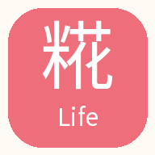

発酵でつくる、やさしい毎日。
糀Lifeをスマホに追加
いつものレシピを、ホーム画面からすぐに。
無料・ログイン不要で使えます。
この端末では、アプリとして開いています。
LINEから開いている方へ
LINEのメニューから「ブラウザで開く」を選び、iPhoneはSafari、AndroidはChromeで開いてください。表示名は端末によって異なります。
iPhone・iPadで追加
- このページをSafariで開きます。
- 「共有」から「ホーム画面に追加」を選びます。見つからない場合は共有メニューを下へスクロールします。
- 「Webアプリとして開く」がある場合はオンにし、「追加」を押します。
Androidで追加
- このページをChromeで開きます。
- 上の「スマホに追加」ボタン、またはChromeの「⋮」メニューを開きます。
- 「アプリをインストール」または「ホーム画面に追加」を選び、画面の案内に沿って追加します。
ボタンが出ない場合も、ブラウザのメニューから操作してください。
使いたいときは、アイコンをタップ
ホーム画面の「糀Life」からレシピを探せます。お気に入りや買い物リストは、この端末・ブラウザに保存されます。別端末には同期されません。
追加したアプリとブラウザで保存内容が共有されない場合があります。普段使う開き方をそろえてください。初回や最新レシピの表示にはインターネット接続が必要です。
家族やお友達にも
QRコード画像を保存App Store・Google Playからダウンロードする形式ではなく、ブラウザからホーム画面に追加するWebアプリです。